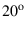
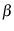
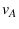

Next: Incremental Vertex Deletion Up: Mesh Coarsening Previous: Mesh Coarsening Contents
An experienced analyst can look at an unstructured mesh and identify important features that should be retained in a coarse mesh. For example, a person would choose to retain the vertex at the sharp trailing edge of an airfoil in two dimensions and corners in three-dimensional geometry. Elsewhere in the mesh, a person would choose a sampling of points, not too close together but also not leaving any large blank areas. This section describes a vertex selection algorithm that makes the same choices. Critical to the success of the algorithm is the notion of a hierarchy of features in the mesh, from sharp corners on the boundary to plain interior vertices. The algorithm is summarized below in terms of this hierarchy, from most to least specialized; the remainder of this section discusses the details of the algorithm.
Identification of apexes and folds is discussed in Section 6.1.1.
Apexes and folds are lower-dimensional mesh features: an apex is a zero-dimensional entity, while a fold is a one-dimensional entity in a three-dimensional mesh. To determine whether a boundary vertex is an apex or lies on a fold, the algorithm computes the unit normals of all faces (edges in 2D, triangles in 3D) that are incident on the vertex.
In two dimensions, only two faces are incident on a vertex. If these
faces have normals that differ in direction by more than

In three dimensions, the presence of two distinct face normals (separated
by some user-defined angle 
Apexes are always retained in the coarse mesh. This choice has positive and negative side effects. On the positive side, not object can ever be eliminated from the mesh if apexes are retained. On the negative side, small features on large objects are likely to be retained, even when typical cell sizes are much larger than the feature in question.
Elsewhere, the mesh is coarsened with the goal of reducing mesh size while maintaining a good distribution of vertices and therefore good mesh quality. One intuitive approach to this problem is to keep as many vertices as possible without keeping two that are too close together: a maximal independent set (MIS) of the conflict graph of the mesh [7]. In the conflict graph, an edge connects any pair of vertices that are physically too close together compared with the length scale defined for those two vertices. This graph is similar but not identical to the connectivity graph, as occasionally first neighbor vertices in the mesh are far enough apart to co-exist in the coarse mesh, whereas some second neighbor vertices are too close together.
For efficiency reasons, GRUMMP constructs the conflict graph as needed. Before using the MIS to coarsen boundary curves, the conflict graph for boundary curve vertices is constructed. Later, when the MIS for boundary vertices is needed, that conflict graph is constructed, and likewise for isotropic interior vertices. Because only currently active vertices have their conflict graph computed at each step, no vertex ever has its conflict graph re-generated.
GRUMMP uses MIS vertex selection in three places: folds, surface meshes,
and interior meshes. Applying the same MIS code for these three cases
requires only appropriate restrictions on which vertices are active,
as these are the only vertices that the algorithm can legally mark
for inclusion or exclusion from the coarse mesh. For selection of
surface vertices, for example, only plain surface vertices are active;
any specialized surface vertices (apexes or folds) and all interior
vertices are inactive. In each case, the maximal independent vertex
set is constructed in two phases: initial creation and size improvement.
In the initial creation phase, the algorithm traverses the mesh using
an advancing front, marking any unmarked, active vertex 